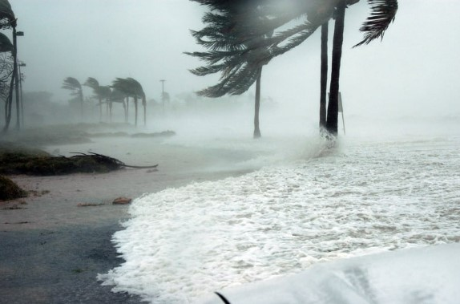

Fırtına Anında Yapılacaklar: Temel Bilgiler ve İpuçları
Fırtınalar, doğal afetler arasında yer alan, kuvvetli rüzgarlar ve yoğun yağışlar ile birlikte gelen tehlikeli olaylardır. Fırtına sırasında doğru hazırlık ve hareket, hayat kurtarıcı olabilir. Bu yazıda, fırtına anında yapılması gerekenler hakkında temel bilgiler ve ipuçları sunulacaktır.
1. Fırtına Uyarılarını Takip Edin
Fırtına öncesinde ve sırasında yerel hava durumu uyarılarını takip etmek çok önemlidir. Meteorolojik uyarıları dikkate alarak fırtınanın yaklaşmakta olduğunu öğrenin ve gerekli önlemleri alın.
2. Güvenli Bir Yere Sığının
Fırtına sırasında dışarıda kalmaktan kaçının. Eğer dışarıdaysanız, en kısa sürede kapalı bir alana sığının. Mümkünse, sağlam bir binaya ya da yer altı alanlarına (örneğin, bodrum) girin.
3. Pencereleri ve Kapıları Kapatın
Fırtına sırasında rüzgarın etkisiyle camların kırılma riski vardır. Tüm pencere ve kapıları kapatın ve dışarıya hiçbir şekilde çıkmamaya özen gösterin. Eğer evdeyseniz, pencerelerin önüne kalın perdeler çekmek faydalı olabilir.
4. Elektrik Kesintilerine Karşı Hazırlıklı Olun
Fırtına sırasında elektrik kesintileri yaşanabilir. Bu yüzden, evde el feneri, yedek piller ve şarj cihazları bulundurmak önemlidir. Ayrıca, yemek yapma ve ısınma için alternatif yollar hazırlayın.
5. Dışarıda Olan Eşyaları İçeri Alın
Fırtına sırasında dışarıda olan eşyalar uçabilir ve ciddi zararlar verebilir. Bahçe mobilyaları, çöp kutuları veya diğer hafif eşyaları içeri alarak fırtınanın etkisini azaltın.
6. Araçları Güvenli Bir Yere Park Edin
Fırtına sırasında araçların dışarıda kalması risklidir. Aracınızı kapalı bir alanda park etmeye çalışın. Eğer dışarıda kalmak zorundaysanız, açık alanlardan uzaklaşarak güvenli bir yere park edin.
7. Yüksek Ağaçlardan ve Elektrik Direklerinden Uzak Durun
Fırtına sırasında yüksek ağaçlar ve elektrik direkleri devrilebilir. Bu nedenle, bu tür yapılardan uzak durmaya çalışın. Ayrıca, rüzgarın şiddetiyle uçabilecek nesnelerden de korunmaya özen gösterin.
8. Duygusal Hazırlık Yapın
Fırtınalar sırasında insanlar korkabilir ve paniğe kapılabilir. Aile üyelerinizle birlikte sakin kalın, birbirinizi yatıştırın ve her adımda birbirinize yardımcı olun. Çocuklara veya yaşlılara özel dikkat gösterin.
9. Gönüllü Yardımlarına Katılın
Fırtına sonrası zarar gören alanlarda yardım etmek isteyen gönüllüler için yerel yardım organizasyonlarına başvurabilirsiniz. Bu tür gönüllü aktiviteler, toplumun afetlere karşı dayanıklılığını artırmak için çok önemlidir.
10. Fırtına Sonrasında Dikkatli Olun
Fırtına sonrasında hala tehlikeler olabilir. Elektrik kabloları kopmuş olabilir, ağaçlar devrilmiş olabilir ve su baskınları meydana gelebilir. Bu yüzden dışarı çıkmadan önce çevrenizi dikkatlice değerlendirin ve güvenli olduğundan emin olun.